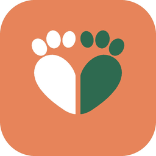

ペット自慢
うちの子の写真を投稿して、見せ合えます。気に入った写真には、気持ちを送れます。


AniMatch 保護団体の方へ犬・猫・うさぎ・小鳥・小動物・爬虫類など。いろいろな動物と暮らす人と、動物が好きな人のためのアプリです。
うちの子の写真を投稿して、見せ合えます。気に入った写真には、気持ちを送れます。
動物の種類ごとに見られるので、犬や猫以外の子も1位になれます。
 犬
犬 猫
猫 うさぎ
うさぎ 小鳥
小鳥 小動物
小動物 爬虫類
爬虫類1週間前・1か月前・1年前の今日に投稿した、うちの子の写真がホームに出ます。
保護団体・里親募集・迷子・ボランティアを、ことばや都道府県で探せます。
体重・ワクチン・薬・通院を記録。次の予定日が近づくと、ホームでお知らせします。記録は本人だけが見られます。
飼い方の疑問を、動物好きどうしで聞き合えます。
参加者のグループチャットつき。スタンプや写真、日にちの投票、思い出アルバムも。
動物病院を、マップで探せます。
自分の投稿や団体の里親募集を、ロゴ入りの画像にしてSNSでシェアできます。
迷子になった動物の情報を、みんなで見られます。
登録や投稿で、バッジがもらえます。
気持ちよく動物の話を楽しめるように、守るしくみを入れています。
ひどい言葉や連絡先を投稿できないようにする、安全のしくみを入れています。
ブロックした相手からは、メッセージが届きません。だれをブロックしたかは、ほかの人には見えません。
プロフィールの年齢は「20代」のような年代だけを見せます。生年月日は本人しか見られません。
気になる投稿やコメントは、アプリの中から通報できます。運営が内容を確かめて対応します。
うちの子の記録帳は、本人だけが見られます。
使うときのきまりは、利用規約にまとめています。
いま、ひとつずつ機能を作っています。公開したら、このページでお知らせします。
保護された子たちのことを、動物と暮らす人・動物好きの人に届けたいと考えています。
2027年2月公開予定です。公開したら、このページでお知らせします。
犬・猫・うさぎ・小鳥・小動物・爬虫類など、いろいろな動物と暮らす人に使ってほしいアプリです。ランキングも動物の種類ごとに見られます。
はい。動物が好きな方に使ってほしいアプリです。里親募集やボランティア募集を見たり、保護団体のお知らせを読んだり、みんなのペット自慢を楽しんだりできます。
はい。お知らせ・活動報告や、里親募集・ボランティア募集を出せます。くわしくはお問い合わせからご連絡ください。
個人で開発しています。ご意見やご感想は、お問い合わせからお寄せください。